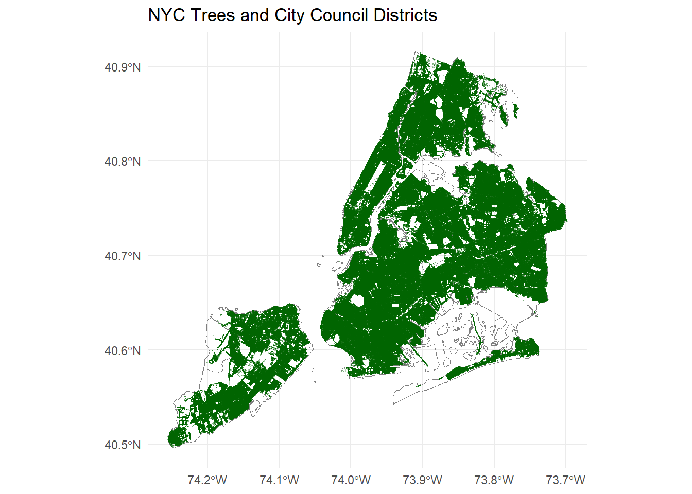

This mini-project works to analyze NYC’s street trees by combining council district boundaries with detailed tree data from NYC OpenData. The goal is to visualize where trees are located, assess their condition and species patterns, and use these findings to propose a targeted improvement plan for one district supported by data and maps.
Data Acquisition
Task 1: Download NYC City Council District Boundaries
Show code
library(sf)library(dplyr)library(httr2)library(ggplot2)library(DT)# download from NYC City Council District websitedownload.file(url ="https://s-media.nyc.gov/agencies/dcp/assets/files/zip/data-tools/bytes/city-council/nycc_25c.zip", dest ="data/mp03/nycc_25c.zip", mode ="wb")#unzip in same directoryunzip("data/mp03/nycc_25c.zip", exdir ="data/mp03")#read shp file to DATADATA <-st_read("data/mp03/nycc_25c/nycc.shp")
Reading layer `nycc' from data source
`C:\Users\chris\OneDrive\Documents\STA9750-2025-FALL\data\mp03\nycc_25c\nycc.shp'
using driver `ESRI Shapefile'
Simple feature collection with 51 features and 3 fields
Geometry type: MULTIPOLYGON
Dimension: XY
Bounding box: xmin: 913175.1 ymin: 120128.4 xmax: 1067383 ymax: 272844.3
Projected CRS: NAD83 / New York Long Island (ftUS)
Show code
#transforms district boundaries to a more standard systemDATA <-st_transform(DATA, crs ="WGS84")
Task 2: Download Tree Points
Show code
download_tree_points <-function(data_dir ="data/mp03",base_url ="https://data.cityofnewyork.us/resource/hn5i-inap.geojson", # <- GeoJSON APIlimit =50000# rows per page) {# make sure directory existsdir.create(data_dir, recursive =TRUE, showWarnings =FALSE) page <-0L all_files <-character()repeat { offset <- page * limit file_out <-file.path( data_dir,sprintf("tree_points_%06d.geojson", offset) )# Only download if file not already present (polite usage)if (!file.exists(file_out)) {message("Downloading trees with offset = ", offset) resp <-request(base_url) |>req_url_query(`$limit`= limit,`$offset`= offset ) |>req_perform()# Save raw GeoJSON to diskwriteBin(resp_body_raw(resp), file_out) } else {message("Skipping offset = ", offset, " (file already exists)") }# Read this page once to check how many rows we got this_sf <-st_read(file_out, quiet =TRUE) n_rows <-nrow(this_sf)if (n_rows ==0) {message("No rows returned at offset = ", offset, " — stopping.")file.remove(file_out)break } all_files <-c(all_files, file_out)if (n_rows < limit) {message("Last page reached with ", n_rows, " rows at offset = ", offset)break } page <- page +1L }# Read all saved GeoJSON files and combine into one sf object trees_list <-lapply(all_files, st_read, quiet =TRUE) trees_sf <-bind_rows(trees_list)# Make sure CRS matches council districts (DATA from Task 1) trees_sf <-st_transform(trees_sf, st_crs(DATA)) trees_sf}tree_points <-download_tree_points()
Data Integration and Initial Exploration
Task 3: Plot All Tree Points
Show code
ggplot() +geom_sf(data = DATA, fill =NA, color ="grey50", linewidth =0.2) +geom_sf(data = tree_points, size =0.1, alpha =0.3, color ="darkgreen") +coord_sf() +labs(title ="NYC Trees and City Council Districts",x =NULL, y =NULL ) +theme_minimal()

Task 4: District-Level Analysis of Tree Coverage
1. Which council district has the most trees?
Show code
trees_with_districts <-st_join( tree_points, DATA,join = st_intersects,left =FALSE)trees_with_districts |>st_drop_geometry() |>count(CounDist, name ="n_trees") |>arrange(desc(n_trees)) |>slice_head(n =1) |>rename(`Council District`= CounDist,`Number of Trees`= n_trees)
Council District Number of Trees
1 51 70965
The council district that has the most trees is District 51.
2. Which council district has the highest density of trees?
Show code
# 1. Get district areasdistrict_area <- DATA |>st_drop_geometry() |>select(CounDist, Shape_Area)# 2. Count trees per district FIRSTtrees_by_district <- trees_with_districts |>st_drop_geometry() |>count(CounDist, name ="n_trees")# 3. Join counts + area → compute densitytrees_by_district |>left_join(district_area, by ="CounDist") |>mutate(tree_density = n_trees / Shape_Area) |>arrange(desc(tree_density)) |>slice_head(n =1) |>rename(`Council District`= CounDist,`Tree Density`= tree_density,`Area`= Shape_Area,`Number of Trees`= n_trees )
Council District Number of Trees Area Tree Density
1 7 15648 55186140 0.0002835495
The council district that has the highest density of trees is District 7.
3. Which district has highest fraction of dead trees out of all trees?
The species of the tree closest to Baruch’s campus is “Liquidambar styraciflua - sweetgum”.
Task 5: NYC Parks Proposal
Overview
District 16 has a substantial amount of dead/unhealthy trees based on the 2024 Tree Census. Many of these trees run along many of the older residential blocks that get a lot of foot traffic but do not have much shade. Thus, this initiative will focus on removing unsafe trees and planting more resilient species.
Quantitative Statement
Action
Quantity
Removing dead trees
About 400
New replacement plants
Around 500
Trees in District 16
Show code
district_16 <- DATA |>dplyr::filter(CounDist =="16")trees_dist16 <- trees_with_districts |>dplyr::filter(CounDist =="16")bbox16 <- sf::st_bbox(district_16)ggplot() +geom_sf(data = district_16,fill ="grey95",color ="black",linewidth =0.4) +geom_sf(data = trees_dist16,size =0.3,alpha =0.5,color ="darkgreen") +coord_sf(xlim =c(bbox16["xmin"], bbox16["xmax"]),ylim =c(bbox16["ymin"], bbox16["ymax"]) ) +labs(title ="Street Trees in District 16",x =NULL,y =NULL ) +theme_minimal() +theme(axis.text.x =element_text(angle =45, hjust =1),plot.title =element_text(hjust =0.5) # <-- Center the title )
Quantitative Comparison
District 16 has the highest dead-tree ratio among the four districts compared, with roughly 13% of its trees classified as dead or unhealthy. This is higher than District 14 (about 12%), District 3 (around 11%), and far above District 41 (about 7%). Even though these districts have similar overall tree counts, District 16 stands out for having the worst canopy health and the largest share of failing trees. This makes District 16 the district most in need of targeted removal and replacement efforts, supporting the justification for directing additional Parks Department resources toward improving tree conditions in this area.
Comparison Support
To further support this comparison, I’ve constructed a bar chart comparing the dead tree ratios between districts 16, 3, 14, and 41.
Show code
library(scales)compare_ids <-c(16, 14, 3, 41) #districts for further comparisondead_comp <- trees_with_districts |>st_drop_geometry() |>filter(CounDist %in% compare_ids) |>mutate(is_dead = tpcondition =="Dead") |>group_by(CounDist) |>summarise(total_trees =n(),dead_trees =sum(is_dead, na.rm =TRUE),dead_ratio = dead_trees / total_trees)ggplot(dead_comp, aes(x =factor(CounDist), y = dead_ratio, fill =factor(CounDist))) +geom_col(width =0.9, alpha =2) +scale_y_continuous(labels =percent_format(),expand =expansion(mult =c(0, 0.15)) ) +labs(title ="Dead Tree Ratio by Council District",x ="Council District",y ="Percent Dead Trees" ) +theme_minimal() +theme(legend.position ="none",plot.title =element_text(hjust =0.5) )
District 16 vs. District 14
Show code
library(dplyr)library(ggplot2)library(sf)library(patchwork) # for p16 + p14 layout# helper to plot dead trees in a single districtplot_dead_trees <-function(district_num) { district <- DATA |>filter(CounDist == district_num) trees_dead <- trees_with_districts |>filter(CounDist == district_num, tpcondition =="Dead")ggplot() +geom_sf(data = district,fill ="grey95",color ="black",linewidth =0.4) +geom_sf(data = trees_dead,size =0.5,alpha =0.6,color ="red") +coord_sf() +labs(title =paste("Dead Trees in District", district_num) ) +theme_void() +theme(plot.title =element_text(hjust =0.5) )}p16 <-plot_dead_trees(16)p14 <-plot_dead_trees(14)p16 + p14 # side-by-side comparison
The side-by-side maps show that District 16 has a much higher concentration of dead trees compared to District 14. Dead trees in District 16 appear in clear clusters across many residential blocks, while District 14 has fewer and more spread-out problem trees. This visual difference supports focusing removal and replacement efforts in District 16, since its higher number of failing trees impacts safety, shade, and overall canopy health.
Extra Credit
EC #01: Improved Tree Map Visualizations
For improved visualization and legibility, I have segmented the map into their respective districts, allowing each one to be toggled on or off.
Show code
library(leaflet)library(sf)library(dplyr)# 1. Use trees_with_districts, not tree_pointstrees_all <- trees_with_districts |>st_transform(4326) |>mutate(lon =st_coordinates(geometry)[, 1],lat =st_coordinates(geometry)[, 2] )DATA_wgs <- DATA |>st_transform(4326)# 2. Get the list of districts that actually have treesdistrict_ids <-sort(unique(trees_all$CounDist))# 3. Base map with district boundariesm <-leaflet(options =leafletOptions(preferCanvas =TRUE)) |>addProviderTiles(providers$CartoDB.Positron) |>addPolygons(data = DATA_wgs,fillColor ="transparent",color ="black",weight =1,group ="District Boundaries",label =~paste("District", CounDist) )# 4. Add a layer per districtfor (d in district_ids) { td <- trees_all |>filter(CounDist == d)if (nrow(td) ==0L) next# skip if no trees m <- m |>addCircleMarkers(data = td,lng =~lon,lat =~lat,radius =1,stroke =FALSE,fillColor ="darkgreen",fillOpacity =0.4,popup =~paste0("District: ", CounDist,"<br>Species: ", genusspecies),group =paste("District", d) )}# 5. Layer control to toggle districtsm <- m |>addLayersControl(overlayGroups =c("District Boundaries",paste("District", district_ids)),options =layersControlOptions(collapsed =FALSE) )
Source Code
---title: "Mini-Project #3 - Visualizing and Maintaining the Green Canopy of NYC"format: html: css: styles.css code-fold: true code-tools: true code-summary: "Show code"execute: warning: false message: false---## IntroductionThis mini-project works to analyze NYC’s street trees by combining council district boundaries with detailed tree data from NYC OpenData. The goal is to visualize where trees are located, assess their condition and species patterns, and use these findings to propose a targeted improvement plan for one district supported by data and maps.## Data Acquisition### Task 1: Download NYC City Council District Boundaries```{r}library(sf)library(dplyr)library(httr2)library(ggplot2)library(DT)# download from NYC City Council District websitedownload.file(url ="https://s-media.nyc.gov/agencies/dcp/assets/files/zip/data-tools/bytes/city-council/nycc_25c.zip", dest ="data/mp03/nycc_25c.zip", mode ="wb")#unzip in same directoryunzip("data/mp03/nycc_25c.zip", exdir ="data/mp03")#read shp file to DATADATA <-st_read("data/mp03/nycc_25c/nycc.shp")#transforms district boundaries to a more standard systemDATA <-st_transform(DATA, crs ="WGS84")```### Task 2: Download Tree Points```{r}download_tree_points <-function(data_dir ="data/mp03",base_url ="https://data.cityofnewyork.us/resource/hn5i-inap.geojson", # <- GeoJSON APIlimit =50000# rows per page) {# make sure directory existsdir.create(data_dir, recursive =TRUE, showWarnings =FALSE) page <-0L all_files <-character()repeat { offset <- page * limit file_out <-file.path( data_dir,sprintf("tree_points_%06d.geojson", offset) )# Only download if file not already present (polite usage)if (!file.exists(file_out)) {message("Downloading trees with offset = ", offset) resp <-request(base_url) |>req_url_query(`$limit`= limit,`$offset`= offset ) |>req_perform()# Save raw GeoJSON to diskwriteBin(resp_body_raw(resp), file_out) } else {message("Skipping offset = ", offset, " (file already exists)") }# Read this page once to check how many rows we got this_sf <-st_read(file_out, quiet =TRUE) n_rows <-nrow(this_sf)if (n_rows ==0) {message("No rows returned at offset = ", offset, " — stopping.")file.remove(file_out)break } all_files <-c(all_files, file_out)if (n_rows < limit) {message("Last page reached with ", n_rows, " rows at offset = ", offset)break } page <- page +1L }# Read all saved GeoJSON files and combine into one sf object trees_list <-lapply(all_files, st_read, quiet =TRUE) trees_sf <-bind_rows(trees_list)# Make sure CRS matches council districts (DATA from Task 1) trees_sf <-st_transform(trees_sf, st_crs(DATA)) trees_sf}tree_points <-download_tree_points()```## Data Integration and Initial Exploration### Task 3: Plot All Tree Points```{r}ggplot() +geom_sf(data = DATA, fill =NA, color ="grey50", linewidth =0.2) +geom_sf(data = tree_points, size =0.1, alpha =0.3, color ="darkgreen") +coord_sf() +labs(title ="NYC Trees and City Council Districts",x =NULL, y =NULL ) +theme_minimal()```### Task 4: District-Level Analysis of Tree Coverage#### 1. Which council district has the most trees?```{r}trees_with_districts <-st_join( tree_points, DATA,join = st_intersects,left =FALSE)trees_with_districts |>st_drop_geometry() |>count(CounDist, name ="n_trees") |>arrange(desc(n_trees)) |>slice_head(n =1) |>rename(`Council District`= CounDist,`Number of Trees`= n_trees)```The council district that has the most trees is District 51.#### 2. Which council district has the highest density of trees? ```{r}# 1. Get district areasdistrict_area <- DATA |>st_drop_geometry() |>select(CounDist, Shape_Area)# 2. Count trees per district FIRSTtrees_by_district <- trees_with_districts |>st_drop_geometry() |>count(CounDist, name ="n_trees")# 3. Join counts + area → compute densitytrees_by_district |>left_join(district_area, by ="CounDist") |>mutate(tree_density = n_trees / Shape_Area) |>arrange(desc(tree_density)) |>slice_head(n =1) |>rename(`Council District`= CounDist,`Tree Density`= tree_density,`Area`= Shape_Area,`Number of Trees`= n_trees )```The council district that has the highest density of trees is District 7.#### 3. Which district has highest fraction of dead trees out of all trees?```{r}trees_with_districts |>st_drop_geometry() |>mutate(is_dead = tpcondition =="Dead") |>group_by(CounDist) |>summarise(total_trees =n(),dead_trees =sum(is_dead, na.rm =TRUE),frac_dead = dead_trees / total_trees ) |>arrange(desc(frac_dead)) |>slice_head(n =1) |>rename(`Council District`= CounDist,`Fraction Dead`= frac_dead,`Dead Trees`= dead_trees,`Total Trees`= total_trees )```The district that has the highest fraction of dead trees out of all trees is District 32.#### 4. What is the most common tree species in Manhattan?```{r}trees_with_borough <- trees_with_districts |>mutate(dist_num =as.integer(CounDist),borough =case_when( dist_num >=1& dist_num <=10~"Manhattan", dist_num >=11& dist_num <=18~"Bronx", dist_num >=19& dist_num <=32~"Queens", dist_num >=33& dist_num <=48~"Brooklyn", dist_num >=49& dist_num <=51~"Staten Island" ) )trees_with_borough |>filter(borough =="Manhattan") |>st_drop_geometry() |>count(genusspecies, sort =TRUE) |>slice_head(n =1) |>rename(`Most Common Species (Manhattan)`= genusspecies,`Number of Trees`= n )```The most common tree species in Manhattan is Gleditsia triacanthos var. inermis - Thornless honeylocust.#### 5. What is the species of the tree closest to Baruch's campus?```{r}library(sf)new_st_point <-function(lat, lon) {st_sfc(st_point(c(lon, lat)), crs ="WGS84")}baruch <-new_st_point(lat =40.7403, lon =-73.9833)trees_with_borough |>filter(borough =="Manhattan") |>select(geometry, genusspecies) |>mutate(distance =st_distance(geometry, baruch)) |>arrange(distance) |>slice(1) |>pull(genusspecies)```The species of the tree closest to Baruch's campus is "Liquidambar styraciflua - sweetgum".## Task 5: NYC Parks Proposal### OverviewDistrict 16 has a substantial amount of dead/unhealthy trees based on the 2024 Tree Census. Many of these trees run along many of the older residential blocks that get a lot of foot traffic but do not have much shade. Thus, this initiative will focus on removing unsafe trees and planting more resilient species.### Quantitative Statement| Action | Quantity ||------------------------------|--------------------------|| Removing dead trees | About 400 || New replacement plants | Around 500 |### Trees in District 16```{r}district_16 <- DATA |>dplyr::filter(CounDist =="16")trees_dist16 <- trees_with_districts |>dplyr::filter(CounDist =="16")bbox16 <- sf::st_bbox(district_16)ggplot() +geom_sf(data = district_16,fill ="grey95",color ="black",linewidth =0.4) +geom_sf(data = trees_dist16,size =0.3,alpha =0.5,color ="darkgreen") +coord_sf(xlim =c(bbox16["xmin"], bbox16["xmax"]),ylim =c(bbox16["ymin"], bbox16["ymax"]) ) +labs(title ="Street Trees in District 16",x =NULL,y =NULL ) +theme_minimal() +theme(axis.text.x =element_text(angle =45, hjust =1),plot.title =element_text(hjust =0.5) # <-- Center the title )```### Quantitative ComparisonDistrict 16 has the highest dead-tree ratio among the four districts compared, with roughly 13% of its trees classified as dead or unhealthy. This is higher than District 14 (about 12%), District 3 (around 11%), and far above District 41 (about 7%). Even though these districts have similar overall tree counts, District 16 stands out for having the worst canopy health and the largest share of failing trees. This makes District 16 the district most in need of targeted removal and replacement efforts, supporting the justification for directing additional Parks Department resources toward improving tree conditions in this area.### Comparison SupportTo further support this comparison, I've constructed a bar chart comparing the dead tree ratios between districts 16, 3, 14, and 41.```{r}library(scales)compare_ids <-c(16, 14, 3, 41) #districts for further comparisondead_comp <- trees_with_districts |>st_drop_geometry() |>filter(CounDist %in% compare_ids) |>mutate(is_dead = tpcondition =="Dead") |>group_by(CounDist) |>summarise(total_trees =n(),dead_trees =sum(is_dead, na.rm =TRUE),dead_ratio = dead_trees / total_trees)ggplot(dead_comp, aes(x =factor(CounDist), y = dead_ratio, fill =factor(CounDist))) +geom_col(width =0.9, alpha =2) +scale_y_continuous(labels =percent_format(),expand =expansion(mult =c(0, 0.15)) ) +labs(title ="Dead Tree Ratio by Council District",x ="Council District",y ="Percent Dead Trees" ) +theme_minimal() +theme(legend.position ="none",plot.title =element_text(hjust =0.5) )```### District 16 vs. District 14```{r}library(dplyr)library(ggplot2)library(sf)library(patchwork) # for p16 + p14 layout# helper to plot dead trees in a single districtplot_dead_trees <-function(district_num) { district <- DATA |>filter(CounDist == district_num) trees_dead <- trees_with_districts |>filter(CounDist == district_num, tpcondition =="Dead")ggplot() +geom_sf(data = district,fill ="grey95",color ="black",linewidth =0.4) +geom_sf(data = trees_dead,size =0.5,alpha =0.6,color ="red") +coord_sf() +labs(title =paste("Dead Trees in District", district_num) ) +theme_void() +theme(plot.title =element_text(hjust =0.5) )}p16 <-plot_dead_trees(16)p14 <-plot_dead_trees(14)p16 + p14 # side-by-side comparison```The side-by-side maps show that District 16 has a much higher concentration of dead trees compared to District 14. Dead trees in District 16 appear in clear clusters across many residential blocks, while District 14 has fewer and more spread-out problem trees. This visual difference supports focusing removal and replacement efforts in District 16, since its higher number of failing trees impacts safety, shade, and overall canopy health.## Extra Credit### EC #01: Improved Tree Map VisualizationsFor improved visualization and legibility, I have segmented the map into their respective districts, allowing each one to be toggled on or off.```{r}library(leaflet)library(sf)library(dplyr)# 1. Use trees_with_districts, not tree_pointstrees_all <- trees_with_districts |>st_transform(4326) |>mutate(lon =st_coordinates(geometry)[, 1],lat =st_coordinates(geometry)[, 2] )DATA_wgs <- DATA |>st_transform(4326)# 2. Get the list of districts that actually have treesdistrict_ids <-sort(unique(trees_all$CounDist))# 3. Base map with district boundariesm <-leaflet(options =leafletOptions(preferCanvas =TRUE)) |>addProviderTiles(providers$CartoDB.Positron) |>addPolygons(data = DATA_wgs,fillColor ="transparent",color ="black",weight =1,group ="District Boundaries",label =~paste("District", CounDist) )# 4. Add a layer per districtfor (d in district_ids) { td <- trees_all |>filter(CounDist == d)if (nrow(td) ==0L) next# skip if no trees m <- m |>addCircleMarkers(data = td,lng =~lon,lat =~lat,radius =1,stroke =FALSE,fillColor ="darkgreen",fillOpacity =0.4,popup =~paste0("District: ", CounDist,"<br>Species: ", genusspecies),group =paste("District", d) )}# 5. Layer control to toggle districtsm <- m |>addLayersControl(overlayGroups =c("District Boundaries",paste("District", district_ids)),options =layersControlOptions(collapsed =FALSE) )```